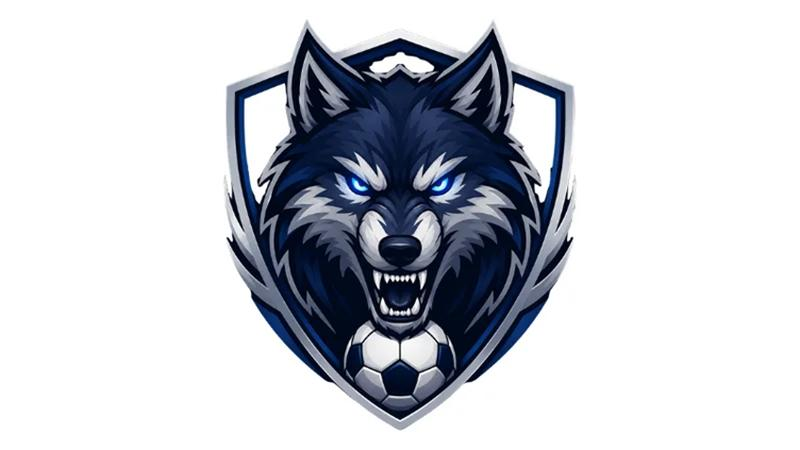
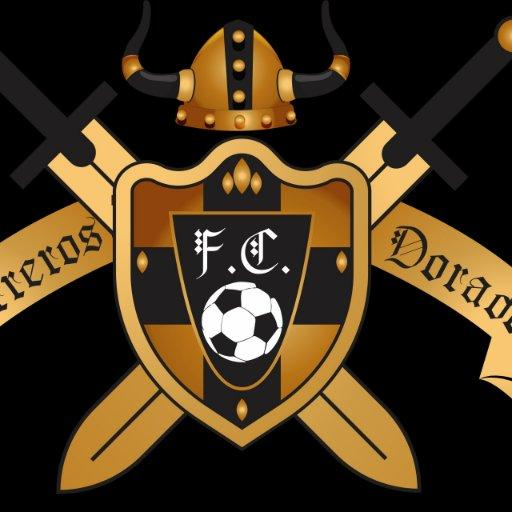

Opis: Ambitna drużyna słynąca z waleczności, agresywnego pressingu i nieustępliwości. Zawodnicy FC Wilcze Szczyty nigdy się nie poddają, a ich symbolem jest wilk – znak siły i jedności. Kibice nazywają ich „Wilczą Sforą”.

KS Bursztynowi Wojownicy
Miasto: Bursztynowo
Barwy: Złoto-czarne
Stadion: Bursztynowy Fort
Opis: Drużyna znana z doskonałej organizacji gry i silnej defensywy. Jej zawodnicy walczą o każdą piłkę, jakby bronili własnej twierdzy. Klub ma bogatą historię lokalnych derbów i wiernych kibiców.

FC Niebiańskie Orły
Miasto: Niebogóra
Barwy: Błękitno-białe
Stadion: Orle Gniazdo
Opis: Młody, dynamiczny klub stawiający na szybkość, technikę i widowiskowy futbol. Drużyna słynie z błyskawicznych kontrataków i utalentowanej młodzieży. Jej motto brzmi: „Wzbijamy się ponad przeciętność!”.